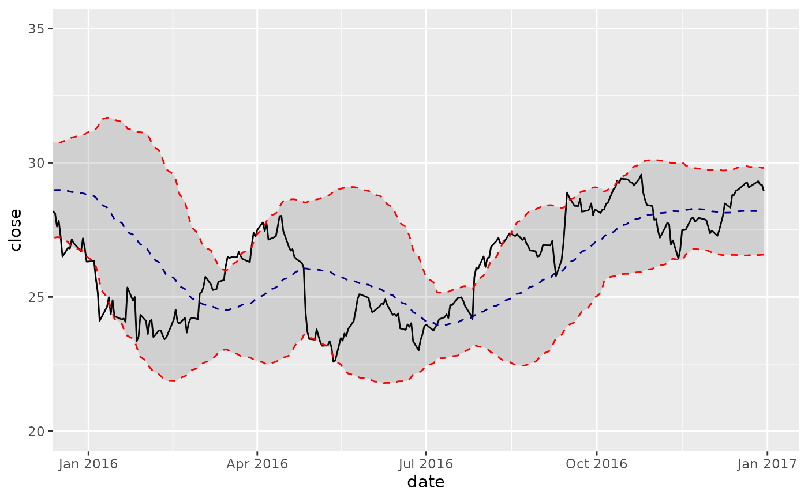
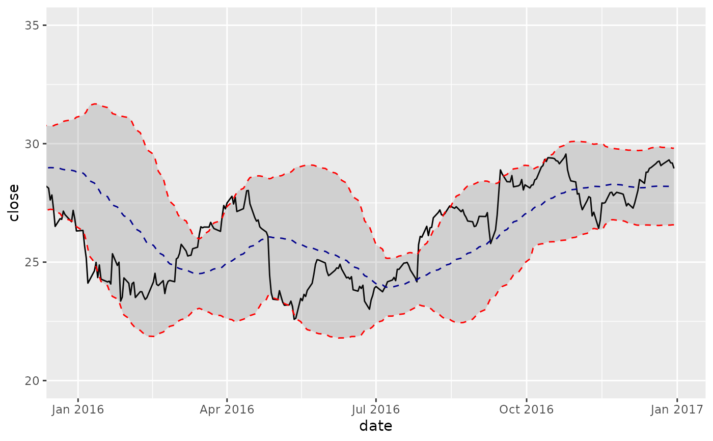
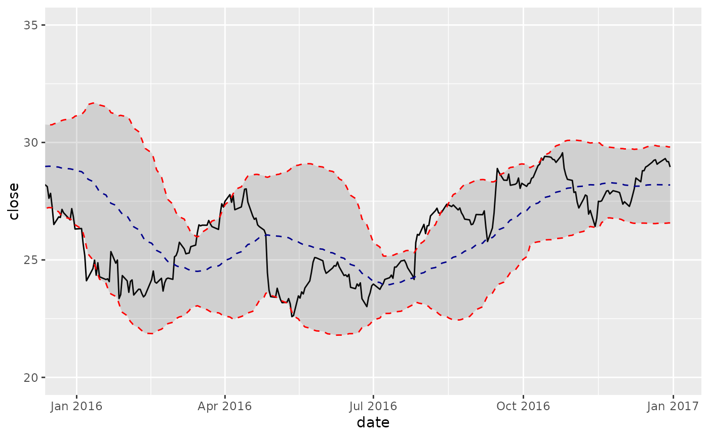

Bollinger Bands plot a range around a moving average typically two standard deviations up and down.
The geom_bbands() function enables plotting Bollinger Bands quickly using various moving average functions.
The moving average functions used are specified in TTR::SMA()
from the TTR package. Use coord_x_date() to zoom into specific plot regions.
The following moving averages are available:
Simple moving averages (SMA): Rolling mean over a period defined by
n.Exponential moving averages (EMA): Includes exponentially-weighted mean that gives more weight to recent observations. Uses
wilderandratioargs.Weighted moving averages (WMA): Uses a set of weights,
wts, to weight observations in the moving average.Double exponential moving averages (DEMA): Uses
vvolume factor,wilderandratioargs.Zero-lag exponential moving averages (ZLEMA): Uses
wilderandratioargs.Volume-weighted moving averages (VWMA): Requires
volumeaesthetic.Elastic, volume-weighted moving averages (EVWMA): Requires
volumeaesthetic.
Usage
geom_bbands(
mapping = NULL,
data = NULL,
position = "identity",
na.rm = TRUE,
show.legend = NA,
inherit.aes = TRUE,
ma_fun = SMA,
n = 20,
sd = 2,
wilder = FALSE,
ratio = NULL,
v = 1,
wts = 1:n,
color_ma = "darkblue",
color_bands = "red",
alpha = 0.15,
fill = "grey20",
...
)
geom_bbands_(
mapping = NULL,
data = NULL,
position = "identity",
na.rm = TRUE,
show.legend = NA,
inherit.aes = TRUE,
ma_fun = "SMA",
n = 10,
sd = 2,
wilder = FALSE,
ratio = NULL,
v = 1,
wts = 1:n,
color_ma = "darkblue",
color_bands = "red",
alpha = 0.15,
fill = "grey20",
...
)Arguments
- mapping
Set of aesthetic mappings created by
ggplot2::aes()orggplot2::aes_(). If specified andinherit.aes = TRUE(the default), it is combined with the default mapping at the top level of the plot. You must supplymappingif there is no plot mapping.- data
The data to be displayed in this layer. There are three options:
If
NULL, the default, the data is inherited from the plot data as specified in the call toggplot2::ggplot().A
data.frame, or other object, will override the plot data. All objects will be fortified to produce a data frame. Seeggplot2::fortify()for which variables will be created.A
functionwill be called with a single argument, the plot data. The return value must be adata.frame., and will be used as the layer data.- position
Position adjustment, either as a string, or the result of a call to a position adjustment function.
- na.rm
If
TRUE, silently removesNAvalues, which typically desired for moving averages.- show.legend
logical. Should this layer be included in the legends?
NA, the default, includes if any aesthetics are mapped.FALSEnever includes, andTRUEalways includes. It can also be a named logical vector to finely select the aesthetics to display.- inherit.aes
If
FALSE, overrides the default aesthetics, rather than combining with them. This is most useful for helper functions that define both data and aesthetics and shouldn't inherit behaviour from the default plot specification, e.g.ggplot2::borders().- ma_fun
The function used to calculate the moving average. Seven options are available including: SMA, EMA, WMA, DEMA, ZLEMA, VWMA, and EVWMA. The default is
SMA. SeeTTR::SMA()for underlying functions.- n
Number of periods to average over. Must be between 1 and
nrow(x), inclusive.- sd
The number of standard deviations to use.
- wilder
logical; if
TRUE, a Welles Wilder type EMA will be calculated; see notes.- ratio
A smoothing/decay ratio.
ratiooverrideswilderinEMA, and provides additional smoothing inVMA.- v
The 'volume factor' (a number in [0,1]). See Notes.
- wts
Vector of weights. Length of
wtsvector must equal the length ofx, orn(the default).- color_ma, color_bands
Select the line color to be applied for the moving average line and the Bollinger band line.
- alpha
Used to adjust the alpha transparency for the BBand ribbon.
- fill
Used to adjust the fill color for the BBand ribbon.
- ...
Other arguments passed on to
ggplot2::layer(). These are often aesthetics, used to set an aesthetic to a fixed value, likecolor = "red"orsize = 3. They may also be parameters to the paired geom/stat.
Aesthetics
The following aesthetics are understood (required are in bold):
x, Typically a datehigh, Required to be the high pricelow, Required to be the low priceclose, Required to be the close pricevolume, Required for VWMA and EVWMAcolour, Affects line colorsfill, Affects ribbon fill coloralpha, Affects ribbon alpha valuegrouplinetypesize
See also
See individual modeling functions for underlying parameters:
TTR::SMA()for simple moving averagesTTR::EMA()for exponential moving averagesTTR::WMA()for weighted moving averagesTTR::DEMA()for double exponential moving averagesTTR::ZLEMA()for zero-lag exponential moving averagesTTR::VWMA()for volume-weighted moving averagesTTR::EVWMA()for elastic, volume-weighted moving averagescoord_x_date()for zooming into specific regions of a plot
Examples
# Load libraries
library(tidyquant)
library(dplyr)
library(ggplot2)
AAPL <- tq_get("AAPL", from = "2013-01-01", to = "2016-12-31")
# SMA
AAPL %>%
ggplot(aes(x = date, y = close)) +
geom_line() + # Plot stock price
geom_bbands(aes(high = high, low = low, close = close), ma_fun = SMA, n = 50) +
coord_x_date(xlim = c(as_date("2016-12-31") - dyears(1), as_date("2016-12-31")),
ylim = c(75, 125))
#> Warning: The following aesthetics were dropped during statistical transformation: high,
#> low, close, y
#> ℹ This can happen when ggplot fails to infer the correct grouping structure in
#> the data.
#> ℹ Did you forget to specify a `group` aesthetic or to convert a numerical
#> variable into a factor?
#> Warning: The following aesthetics were dropped during statistical transformation: high,
#> low, close
#> ℹ This can happen when ggplot fails to infer the correct grouping structure in
#> the data.
#> ℹ Did you forget to specify a `group` aesthetic or to convert a numerical
#> variable into a factor?

# EMA
AAPL %>%
ggplot(aes(x = date, y = close)) +
geom_line() + # Plot stock price
geom_bbands(aes(high = high, low = low, close = close),
ma_fun = EMA, wilder = TRUE, ratio = NULL, n = 50) +
coord_x_date(xlim = c(as_date("2016-12-31") - dyears(1), as_date("2016-12-31")),
ylim = c(75, 125))
#> Warning: The following aesthetics were dropped during statistical transformation: high,
#> low, close, y
#> ℹ This can happen when ggplot fails to infer the correct grouping structure in
#> the data.
#> ℹ Did you forget to specify a `group` aesthetic or to convert a numerical
#> variable into a factor?
#> Warning: The following aesthetics were dropped during statistical transformation: high,
#> low, close
#> ℹ This can happen when ggplot fails to infer the correct grouping structure in
#> the data.
#> ℹ Did you forget to specify a `group` aesthetic or to convert a numerical
#> variable into a factor?

# VWMA
AAPL %>%
ggplot(aes(x = date, y = close)) +
geom_line() + # Plot stock price
geom_bbands(aes(high = high, low = low, close = close, volume = volume),
ma_fun = VWMA, n = 50) +
coord_x_date(xlim = c(as_date("2016-12-31") - dyears(1), as_date("2016-12-31")),
ylim = c(75, 125))
#> Warning: The following aesthetics were dropped during statistical transformation: high,
#> low, close, volume, y
#> ℹ This can happen when ggplot fails to infer the correct grouping structure in
#> the data.
#> ℹ Did you forget to specify a `group` aesthetic or to convert a numerical
#> variable into a factor?
#> Warning: The following aesthetics were dropped during statistical transformation: high,
#> low, close, volume
#> ℹ This can happen when ggplot fails to infer the correct grouping structure in
#> the data.
#> ℹ Did you forget to specify a `group` aesthetic or to convert a numerical
#> variable into a factor?
